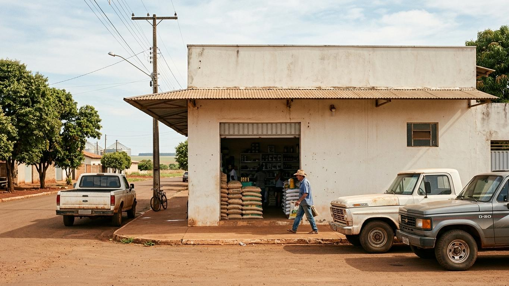
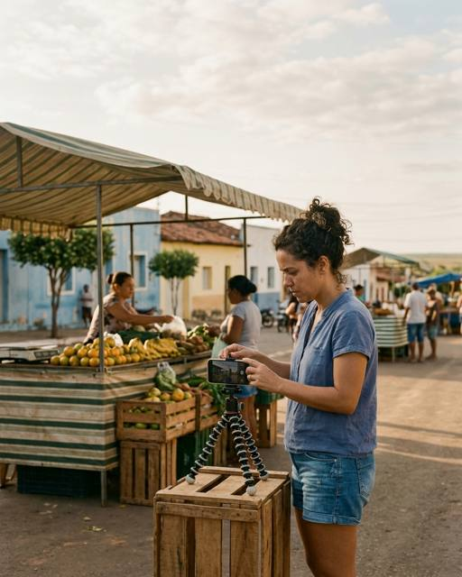
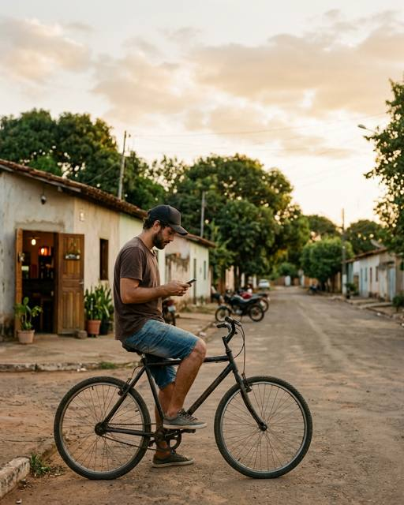
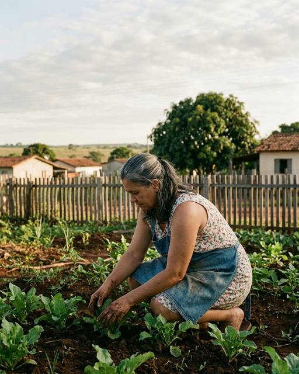
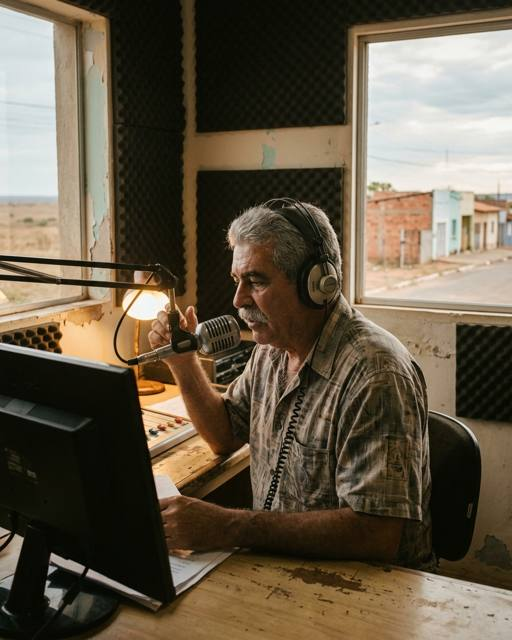
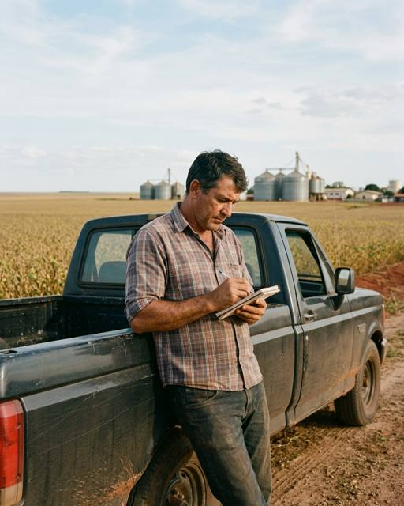
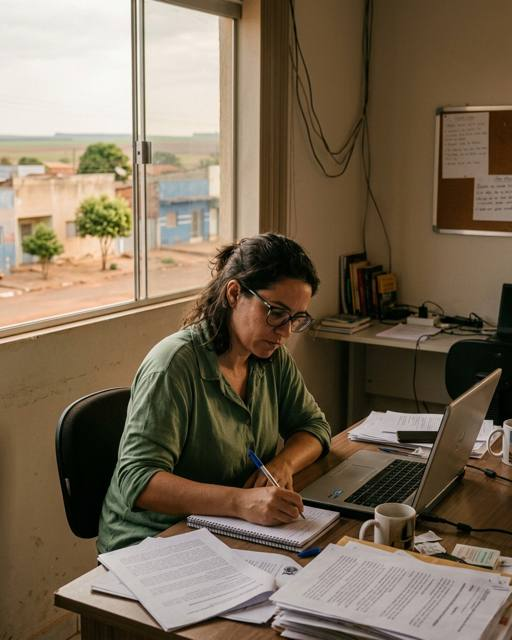

Plano de presença de marca no Cerrado
Plataforma de comunicação para a Casa do Campo: diagnóstico, públicos, mensagem e cronograma de entrada.

Rio Verde, a loja do centro. Imagem ilustrativa gerada para o exemplo.Sumário
- 1Leitura do desafio03
- 2Diagnóstico: onde a marca já é lembrada07
- 3Públicos, mensagem e cronograma14
Leitura do desafio
A empresa e o que muda na comunicação da rede.
- 04A empresa que chega ao Cerrado
- 05O que muda na comunicação da rede
- 06O que aprendemos no capítulo 1
A empresa que chega ao Cerrado
Uma rede conhecida na praça, sem sistema próprio de presença.
A Casa do Campo tem doze lojas em seis cidades e quarenta anos de porta aberta. É lembrada onde está há mais tempo e desconhecida a cinquenta quilômetros de qualquer loja. A comunicação até hoje foi feita loja a loja: a rádio local, o patrocínio da festa, o cartaz na feira.
Nada disso está errado. O que falta é o sistema: uma mensagem que valha para as seis cidades, um calendário que não dependa do gerente de cada loja e um jeito de medir se quem ainda não comprou lembra da marca.
O plano parte do que a pesquisa de junho encontrou em cada cidade e responde a cada uma dessas faltas.
Fontes: entrevistas com a diretoria e os seis gerentes, maio de 2026.
O que muda na comunicação da rede
De seis comunicações locais para uma presença de rede.
Hoje
- Cada gerente decide a mídia da sua loja
- Rádio local e patrocínio de festa
- Sem cadastro único de clientes
- Medição pela venda do mês
- Mensagem diferente em cada cidade
Com o plano
- Um calendário para as seis cidades
- Imprensa regional e perfis de cidade
- Cadastro único, com linha de base em novembro
- Medição de lembrança duas vezes por ano
- Uma mensagem, adaptada por loja
Síntese das entrevistas de maio e do diagnóstico de junho.
O que aprendemos no capítulo 1
- A rede é lembrada onde está há mais tempo. Doze lojas em seis cidades e quarenta anos; a cinquenta quilômetros de qualquer loja, a marca é desconhecida.
- A comunicação foi feita loja a loja. Rádio local, patrocínio de festa e cartaz na feira, decididos por cada gerente, sem calendário comum.
- O que falta é o sistema. Uma mensagem para as seis cidades, um calendário comum e a medição de lembrança entre quem ainda não comprou.
Método: entrevistas com a diretoria e os seis gerentes, maio de 2026.
Diagnóstico: onde a marca já é lembrada
O que a pesquisa mostrou em seis cidades.
- 08Os números da pesquisa
- 09Onde a marca já é lembrada
- 10De onde vêm os clientes novos
- 11Lembrança e compra por cidade
- 12A produtora de Chapadão, um aparte
- 13O que aprendemos no capítulo 2
Os números da pesquisa
A marca é lembrada, menos comprada, e cresce onde abriu loja.
71% de lembrança espontânea em Rio Verde, a maior das seis cidades e 19 pontos acima de 2020.
25 pontos entre conhecer e comprar em Chapadão, a maior distância da rede.
+24 pontos em Jataí desde 2023, o ano da loja nova.
Pesquisa de junho de 2026, 1.240 entrevistas.
Onde a marca já é lembrada
Primeira em quatro cidades; nas duas com concorrente na porta, a segunda.
Base: 1.240 entrevistas, junho de 2026.
De onde vêm os clientes novos
Quatro canais respondem por 85% dos clientes novos.
Cadastro de 2.316 clientes novos nos doze meses até junho de 2026. Participação e acumulado na mesma escala.
Lembrança e compra por cidade
Só Chapadão lembra e não compra.
Pesquisa de junho de 2026. Cortes em 50% de lembrança e 33% de compra, os limiares que o plano adota.
"A gente conhece a Casa do Campo desde criança. Só não sabia que tinha loja aqui."
Produtora de Chapadão, 41 anos, entrevista de junho de 2026. Chapadão tem a maior distância entre conhecer e comprar: 25 pontos.
O que aprendemos no capítulo 2
- A lembrança acompanha a porta. As duas cidades em que a marca é segunda são as duas em que a concorrente tem loja própria.
- Quatro canais fazem 85% dos clientes novos. Indicação, loja, feira e rádio; o digital, que leva a maior verba, traz 7%.
- Chapadão conhece e não compra. Vinte e cinco pontos entre lembrar e levar, a maior distância da rede.
Método: pesquisa de lembrança espontânea com 1.240 entrevistas e cadastro de 2.316 clientes novos.
Públicos, mensagem e cronograma
Quem a cidade ouve, a frase que a rede diz e as fases até abril.
- 15Perfis de cidade e cotidiano
- 16Quem decide, quem influencia, quem observa
- 17A mensagem-mãe
- 18As fases do plano, de setembro a abril
- 19O que começa assim que o plano for aprovado
- 20O que aprendemos no capítulo 3
Perfis de cidade e cotidiano
Quem fala da vida local já fala das lojas sem que a rede peça.






Levantamento de junho de 2026. Nomes fictícios.
Quem decide, quem influencia, quem observa
Quem influencia já fala da loja; quem decide ainda não ouviu.
Anéis por proximidade da decisão de compra. O quadrado laranja marca o ator que o plano ativa primeiro.
A lembrança acompanha a porta, não a mídia.
As fases do plano, de setembro a abril
Cada fase começa quando a anterior funciona; as datas são de referência.
A medição corre por baixo de tudo a partir de novembro. Datas de referência, versão 2 do plano.
O que começa assim que o plano for aprovado
As entregas das duas primeiras semanas.
| O quê | Quem | Quando |
|---|---|---|
| Cadastro unificado das doze lojas | TI da rede, com a agência | semana 1 |
| Roteiro das seis visitas às redações | Agência | semana 1 |
| Grupo dos gerentes e pauta semanal | Diretoria e agência | semana 1 |
| Pauta para os perfis de cidade | Agência | semana 2 |
| Linha de base da medição | Instituto de pesquisa | semana 2 |
As datas contam a partir da assinatura.
O que aprendemos no capítulo 3
- Quem influencia já fala da loja. Seis perfis citam a Casa do Campo sem contrato; o plano os convida à feira e à abertura de safra, sem roteiro.
- A mensagem é uma só, adaptada por loja. "A lembrança acompanha a porta" vale para as seis cidades; cada gerente ajusta o exemplo, não a frase.
- Cada fase começa quando a anterior funciona. Pré-assinatura em setembro, visitas até dezembro, lançamento em janeiro e a primeira medição em março.
Método: plano de canais, versão 2, julho de 2026, e o cronograma acordado com a diretoria.
O plano inteiro em uma página
Uma mensagem, seis cidades e o acordo entre a rede e a agência.
Plano de presença de marca no Cerrado, para a Casa do Campo. Julho de 2026.
Diagnóstico, públicos, mensagem e cronograma de entrada no território.